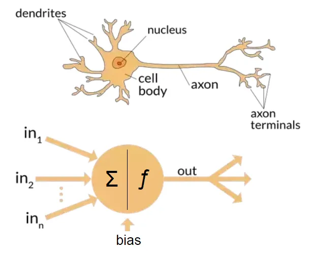
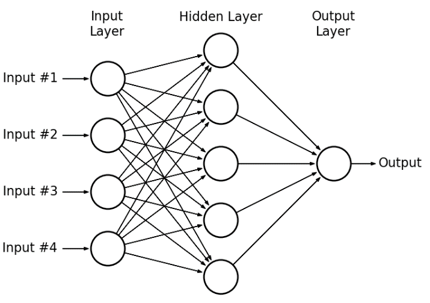
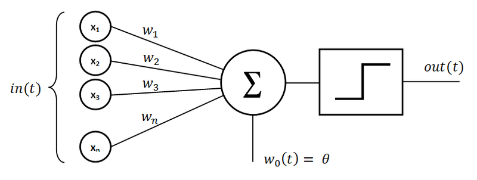

Keyboard shortcuts:
N/СпейсNext Slide
PPrevious Slide
OSlides Overview
ctrl+left clickZoom Element
If you want print version => add '
?print-pdf' at the end of slides URL (remove '#' fragment) and then print.
Like: https://wwwcourses.github.io/...CourseIntro.html?print-pdf
Introduction to Artificial Neural Networks (ANN)
Created for

Iva E. Popova, 2024,

Overview
- Artificial Neural Networks (ANNs) are a subfield of Machine Learning and AI that is inspired by the structure and function of the human brain.
- ANNs are composed of a large number of interconnected processing units called neurons, which are organized in layers.
- ANNs are used to model complex nonlinear relationships between input and output data and to learn from examples without being explicitly programmed.

The inspiration
- Artificial Neural Networks (ANNs) are inspired by the structure and function of the human brain. The idea of ANNs is based on the concept that the brain is a network of interconnected neurons that communicate with each other to process and transmit information.
- The neurons in the human brain receive input signals from other neurons through dendrites, perform computations in the cell body, and then produce an output signal through an axon that connects to other neurons. The communication between neurons in the brain occurs through synapses, which are the connections between the axon of one neuron and the dendrites of another neuron.
Biological Neuron vs Artificial Neuron

source: https://towardsdatascience.com/the-differences-between-artificial-and-biological-neural-networks-a8b46db828b7
{kind=link}
| Biological Neuron | Artificial Neuron |
|---|---|
| dendrites | input |
| soma (cell nucleus) | node |
| axon | output |
| synapses | interconnections |
The neuron
- The neurons in an ANN receive input signals, perform computations, and then produce an output signal.
- The input signals are usually multiplied by a set of weights, which are adjusted during the training process to minimize the error between the predicted output and the actual output.
- The weighted input signals are then passed through an activation function, which produces the output signal.
ANN Structure
ANN Structure
- The structure of an ANN can be described as a directed graph, where each neuron in one layer is connected to every neuron in the next layer.
- The input layer is where the data is fed into the network, and the output layer produces the result.
- In between, there can be one or more hidden layers, which are used to extract relevant features from the input data. 
{kind=link}
Layers
- Input layer
- This is the layer where the input data is fed into the network.
- The number of neurons in the input layer is determined by the size of the input data.
- For example, if we are using a neural network for image classification, the input layer will have neurons corresponding to the pixels of the image.
- Hidden layer
- This is the layer that lies between the input and output layers of the network.
- The number of hidden layers and the number of neurons in each hidden layer can vary depending on the complexity of the problem being solved
- The hidden layer(s) are used to extract relevant features from the input data
- Output layer
- This is the final layer of the network that produces the output.
- The number of neurons in the output layer is determined by the type of problem being solved.
- For example, in a binary classification problem, the output layer will have two neurons corresponding to the two possible classes.
Dense Layer
- A Dense layer, also known as a fully connected layer, is a fundamental building block in neural networks.
- In a Dense layer, each neuron is connected to every neuron in the previous layer. This means that every input to the Dense layer contributes to the output of each neuron in the layer.
- The output of a Dense layer is computed using the following formula:
- output = activation(input ⋅ weights + bias)
- Where:
- input: The data from the previous layer.
- weights: The trainable parameters that define the importance of each input for each neuron.
- bias: A trainable offset value added to the weighted sum.
- activation: A function (e.g., ReLU, Sigmoid) that introduces non-linearity to the output.
Example of a Dense Layer in Keras
- The layer contains 32 neurons. Each neuron receives input from every neuron in the previous layer (or the input data).
- The layer expects an input of 8 features. This means the input to the network has 8 dimensions or attributes, which are passed to each of the 32 neurons.
- Each of the 32 neurons has 8 corresponding weights (one for each input feature) and a bias term.
- The total number of trainable parameters for this layer is \( (8 \times 32) + 32 = 288 \) (weights + biases).
- The ReLU (Rectified Linear Unit) activation function is applied to the output of each neuron. This introduces non-linearity, making the network capable of learning complex patterns.
from keras.models import Sequential
from keras.layers import Dense
# Create a simple model with a Dense layer
model = Sequential()
# Add a Dense layer with 32 neurons and ReLU activation
model.add(Dense(32, input_dim=8, activation='relu'))
Activation Function
Activation Function
- Activation functions are an essential part of Neural Networks as they are responsible for introducing non-linearity into the model. Without activation functions, Neural Networks would essentially be a series of linear operations, which would severely limit the model's capacity to learn complex patterns.
- There are several types of activation functions used in ANNs, including sigmoid, ReLU, and tanh.
- The choice of activation function depends on the problem being solved and the type of data being processed.
Sigmoid Function
- The Sigmoid function is one of the earliest and most widely used activation functions in Neural Networks. The Sigmoid function maps any input value to a value between 0 and 1, which makes it useful in binary classification problems. The mathematical formula for the Sigmoid function is given below: $$\\sigma(x) = \frac{1}{1 + e^{-x}}$$
- The Sigmoid function has the following properties:
- It is a smooth, continuous function.
- Its output is always between 0 and 1.
- The output is centered around 0.5, which can make it problematic in cases where the input values are very large or very small.
ReLU Function
- The Rectified Linear Unit (ReLU) function is another popular activation function used in Neural Networks. The ReLU function maps any input value to either 0 or the input value itself, which makes it useful in cases where we want to introduce sparsity in the model. The mathematical formula for the ReLU function is given below: $$ReLU(x) = max(0, x)$$
- The ReLU function has the following properties:
- It is a simple, non-linear function.
- It is computationally efficient to compute.
- The output is sparse, which can help with overfitting.
Tanh Function
- The Tanh function is another popular activation function that maps any input value to a value between -1 and 1. The Tanh function is useful in cases where we want to introduce non-linearity and can help with normalization of the data. The mathematical formula for the Tanh function is given below: $$tanh(x) = \frac{e^{x} - e^{-x}}{e^{x} + e^{-x}}$$
- The Tanh function has the following properties:
- It is a smooth, continuous function.
- Its output is always between -1 and 1.
- The output is centered around 0, which can help with normalization of the data.
ANN training
ANN training. Backpropagation.
- Training an ANN involves adjusting the weights of the connections between neurons to minimize the error between the predicted output and the actual output.
- This is done using a process called backpropagation, which involves calculating the gradient of the error with respect to each weight and bias in the network, and using this gradient to update the values of the weights and biases in the direction that reduces the error.
Backpropagation Algorithm
Here's how it works in simple terms:
- 1. Feedforward: The input data is fed into the network, and the output is calculated by passing it through a series of interconnected nodes, also known as neurons.
- 2. Calculate Error: The difference between the predicted output and the actual output is calculated, and this is known as the error.
- 3. Backpropagation: The error is then propagated backwards through the network to adjust the weights and biases. The weights and biases are updated in the direction that reduces the error, using an optimization algorithm such as Stochastic Gradient Descent.
- 4. Repeat: Steps 1-3 are repeated for each example in the training dataset until the error is minimized.
Perceptron
Perceptron
Overview
- A perceptron is a type of artificial neural network that is used for binary classification problems. It is the simplest type of neural network and consists of a single layer of neurons that are fully connected to the input data.
- The perceptron algorithm was introduced by Frank Rosenblatt in the 1950s and is based on the concept of a biological neuron.
- A single perceptron can only be used to implement linearly separable functions
-

- The input to a perceptron is a vector of real-valued numbers that represents the features of the input data:
in(t) - Each feature ($x_i$) is associated with a weight ($w_i$), which is a real-valued number that determines the importance of the feature.
- The weighted sum of the inputs is then passed through an activation function, which produces the output of the perceptron.
- The activation function used in a perceptron is a step function that produces a binary output.
{kind=link}
Perceptron Activation Function
- If the weighted sum of the inputs is greater than a threshold value ($\theta$), the perceptron outputs a 1; otherwise, it outputs a 0:
$$
\text{out(t)} = \begin{cases}
1, &\text{if } w_1x_1 + w_2x_2 + \dots + w_nx_n \geq \theta \\
0, &\text{if } w_1x_1 + w_2x_2 + \dots + w_nx_n \lt \theta
\end{cases}
$$
where $w_1$, $w_2$, ..., $w_n$ are the weights associated with the input features $x_1$, $x_2$, ..., $x_n$.
- To make things a little simpler for training, the threshold is moved to the other side of the inequality: $$ \text{out(t)} = \begin{cases} 1, &\text{if } w_1x_1 + w_2x_2 + \dots + w_nx_n + bias \geq 0 \\ 0, &\text{if } w_1x_1 + w_2x_2 + \dots + w_nx_n + bias \lt 0 \end{cases} $$ where bias = -threshold
Example: OR Function Using A Perceptron
How to implement Perceptron from scratch with Python
ANN Types
ANN Types
Feedforward Neural Networks (FNNs)
- This is the simplest type of neural network, where the data flows only in one direction, from the input layer to the output layer.
- FNNs can have one or more hidden layers.
- The neurons in the input layer are connected to the neurons in the hidden layer, and the neurons in the hidden layer are connected to the neurons in the output layer.
Convolutional Neural Networks (CNNs)
- CNNs are used for image and video recognition tasks.
- They use a convolutional layer to extract relevant features from the input image, followed by a pooling layer to reduce the dimensionality of the output.
- The output of the pooling layer is then fed into a fully connected layer to produce the final output.
Recurrent Neural Networks (RNNs)
- RNNs are used for sequential data processing tasks, such as speech recognition and natural language processing.
- RNNs have a feedback loop that allows the output of a neuron to be fed back into the input of the same neuron or other neurons in the network.
- This allows RNNs to model the temporal dependencies in sequential data.
Long Short-Term Memory Networks (LSTMs)
- LSTMs are a type of RNN that are designed to address the vanishing gradient problem.
- LSTMs use memory cells that can store information for long periods of time, allowing the network to learn long-term dependencies in sequential data.
References
Pros and Cons of Artificial Neural Networks
Pros and Cons of Artificial Neural Networks
Pros of Artificial Neural Networks
- 1. Ability to Learn Nonlinear Relationships:
- ANNs can model complex nonlinear relationships between inputs and outputs, making them effective for tasks such as image recognition, speech processing, and more.
- 2. Adaptability:
- ANNs can be trained to solve a variety of problems without needing specific rules, allowing them to generalize to new data once trained.
- 3. Scalability:
- ANNs can scale from simple networks to deep architectures, allowing them to be used in small to large-scale applications (e.g., simple classification to deep learning tasks like NLP).
Cons of Artificial Neural Networks
- 1. Computationally Intensive:
- Training ANNs, especially deep networks, requires significant computational resources, often involving GPUs or specialized hardware.
- 2. Data Dependency:
- ANNs require large datasets to achieve good performance. Without sufficient data, they are prone to overfitting or underfitting.
- 3. Black Box Nature:
- It is difficult to interpret the inner workings of ANNs, making it hard to explain why certain decisions are made, which can be a drawback in critical applications like healthcare or finance.
Applications of Artificial Neural Networks
Applications of Artificial Neural Networks
Learning Tasks for Artificial Neural Networks
- Artificial Neural Networks (ANNs) are applied in various types of learning tasks:
- Supervised Learning
- ANNs are widely used for tasks like classification, regression, and predictive modeling, where labeled data is available (e.g., image recognition, speech recognition).
- Unsupervised Learning
- ANNs are employed in tasks like clustering, dimensionality reduction, and anomaly detection, typically using techniques like Autoencoders and Self-Organizing Maps (SOM).
- Reinforcement Learning
- ANNs are integrated into reinforcement learning for decision-making tasks, particularly in environments where agents learn from rewards (e.g., Deep Q-Networks, AlphaGo).
Image Recognition
- Convolutional Neural Networks (CNNs), a type of ANN, are widely used for image classification and object detection tasks.
- They have shown remarkable success in recognizing objects in photos, medical images, and facial recognition systems.
# Example of loading a pre-trained CNN for image recognition
from tensorflow.keras.applications import VGG16
model = VGG16(weights='imagenet')
# Model can now be used for image classification
Natural Language Processing
- Recurrent Neural Networks (RNNs) and Transformer models are widely used in NLP tasks.
- Applications include language translation, sentiment analysis, and chatbots like GPT, which are based on Transformer architecture.
# Example of using GPT-3 for text generation
import openai
openai.api_key = 'your-api-key'
response = openai.Completion.create(
model="text-davinci-003",
prompt="Explain ANN in simple terms.",
max_tokens=50
)
print(response.choices[0].text.strip())
Game AI
- ANNs are used to train intelligent agents in games to make decisions, strategize, and even learn from the game environment.
- Deep Reinforcement Learning (which uses Deep Neural Networks) has been applied to create AI that can outperform humans in games like Go and Dota 2.
Using Python Libraries for Artificial Neural Networks
Using Python Libraries for Artificial Neural Networks
TensorFlow
- TensorFlow is an open-source library developed by Google, widely used for building and training machine learning models, especially deep learning models.
- TensorFlow is highly scalable and can be deployed in both research and production environments. It supports both low-level operations and high-level APIs for neural networks.
Keras
- Keras is a high-level API built on top of TensorFlow that simplifies the process of creating and training deep learning models.
- Keras is known for its user-friendliness, ease of prototyping, and flexibility in building both simple and complex models.
PyTorch
- PyTorch is an open-source machine learning library developed by Facebook, widely used for research and prototyping.
- PyTorch provides dynamic computational graphs, which allow for easier debugging and experimentation. It is also known for its flexibility and ease of use in creating complex neural network architectures.
Example: Creating an ANN with Keras
Example: Creating an ANN with Keras
Keras Example
- The network consists of two layers: 1. Input Layer and Hidden Layer: The first layer is a Dense (fully connected) layer with 32 neurons and the ReLU activation function. It accepts an input of 8 dimensions (features).
- 2. Output Layer: The second layer is the output layer with 1 neuron, using the sigmoid activation function. This is ideal for binary classification tasks, as it produces an output between 0 and 1.
# Import necessary libraries
from keras.models import Sequential
from keras.layers import Dense
# Create a simple ANN
model = Sequential()
model.add(Dense(32, input_dim=8, activation='relu')) # Input layer and first hidden layer
model.add(Dense(1, activation='sigmoid')) # Output layer
# Compile the model
model.compile(optimizer='adam', loss='binary_crossentropy', metrics=['accuracy'])
# Train the model on the training data (X_train, y_train)
model.fit(X_train, y_train, epochs=10, batch_size=32)
Example: Creating an ANN with PyTorch
Example: Creating an ANN with PyTorch
PyTorch Example
- The network consists of two layers:
- 1. Input Layer and Hidden Layer: The first layer is a fully connected layer with 32 neurons. It uses the ReLU activation function and takes 8 input features.
- 2. Output Layer: The second layer is the output layer with 1 neuron, using the sigmoid activation function. This is designed for binary classification tasks.
import torch
import torch.nn as nn
import torch.optim as optim
# Define a simple ANN
class SimpleANN(nn.Module):
def __init__(self):
super(SimpleANN, self).__init__()
self.fc1 = nn.Linear(8, 32)
self.fc2 = nn.Linear(32, 1)
def forward(self, x):
x = torch.relu(self.fc1(x))
x = torch.sigmoid(self.fc2(x))
return x
# Initialize the model, loss function, and optimizer
model = SimpleANN()
criterion = nn.BCELoss() # Binary cross-entropy loss
optimizer = optim.Adam(model.parameters())
# Training loop (assuming X_train and y_train are available)
for epoch in range(10):
optimizer.zero_grad()
outputs = model(X_train)
loss = criterion(outputs, y_train)
loss.backward()
optimizer.step()